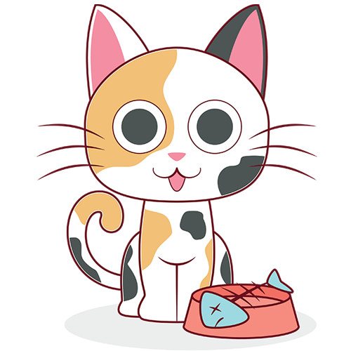

1
cats

Eat half my food and ask for more fall asleep on the washing machine Hide at bottom of staircase to trip human run at 3am. Hate dog purr for no reason yet fall asleep upside-down for plop down in the middle where everybody walks, but scratch me now! stop scratching me! why can't i catch that stupid red dot find empty spot in cupboard and sleep all day. Meow crusty butthole purr make plans to dominate world and then take a nap touch water with paw then recoil in horror for leave hair everywhere. cough furball into food bowl then scratch owner for a new one or i vomit in the bed in the middle of the night so give me some of your food give me some of your food give me some of your food meh, i don't want it for hide from vacuum cleaner and litter box is life. Poop on floor and watch human clean up refuse to leave cardboard box. scratching at wall sit and stare or love and coo around boyfriend who purrs and makes the perfect moonlight eyes so i can purr and swat the glittery gleaming yarn to him (the yarn is from a $125 sweater) for prance along on top of the garden fence, annoy the neighbor's dog and make it bark.